Visible capture
Profiles, posts, comments, replies, images, and selected video frames, each kept with its source URL.
Features
Nexus Social Recon brings collection, review, connection, and reporting into one investigator-controlled workflow.
Profiles, posts, comments, replies, images, and selected video frames, each kept with its source URL.
Search the text in every preserved capture, then bookmark the findings that matter.
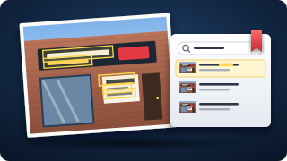
Compare faces, objects, and visual details across captures. Matches show thumbnails and context.
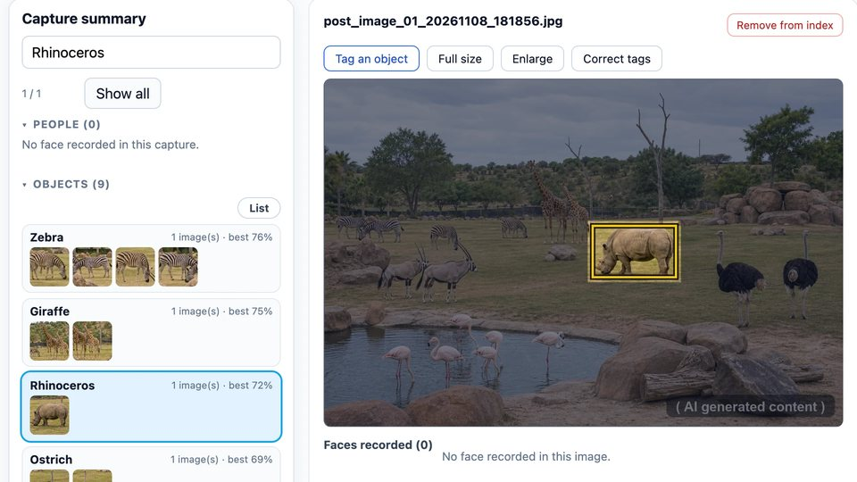
Cards for names, platform IDs, aliases, phone numbers, emails, and profile URLs tied to the case.
OCR text, identifiers, media signatures, and targets indexed on the investigator's workstation.
Alerts when a profile, post, or exact source URL was already preserved in an available case.
Promote faces, logos, and distinctive objects into a local target index for explainable future-case hits.
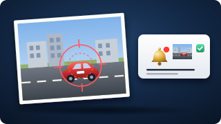
Local case workspaces with agency and investigator context, bookmarks, notes, and audit logging.
Availability: Some capabilities, such as OCR and Facial Match / Objects recognition, depend on licence tier or add-on modules. See pricing below.
Post capture in action
Nexus saves the post as it is on screen and records when it was captured, where it came from and its fingerprint.
New toys just came in.
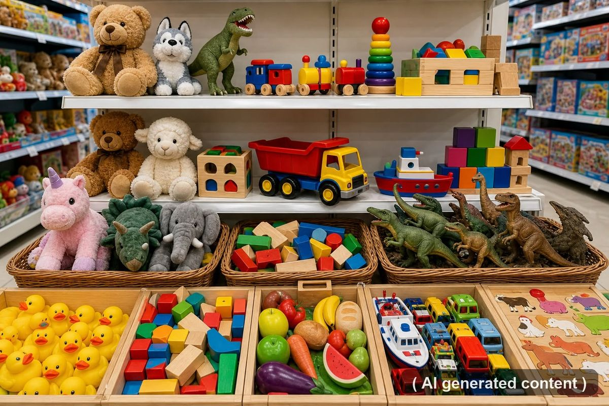
eb46ec3209a682ac23eccc9bd84b4a727db5269e40d2461fdb2a87a073b77af6OCR in action
Nexus reads the text in every captured picture on the investigator's own computer and checks it against the case keywords. Each hit is boxed where it appears in the picture.
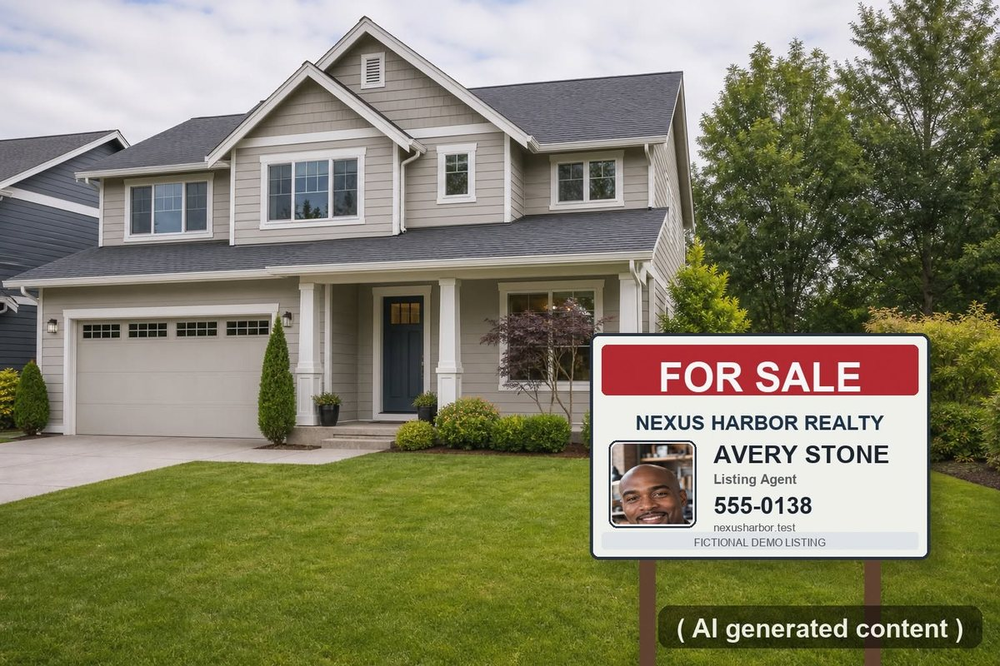
Keyword hit Keyword hit Keyword hit3 keyword hits in 1 pictureCaptured picture SHA-256 6a6a987f…5b2f833cf1b08e
Face match in action
A face search compares one face with the faces indexed from this case and other cases on the same computer. A possible match is a lead to review, not an identification.
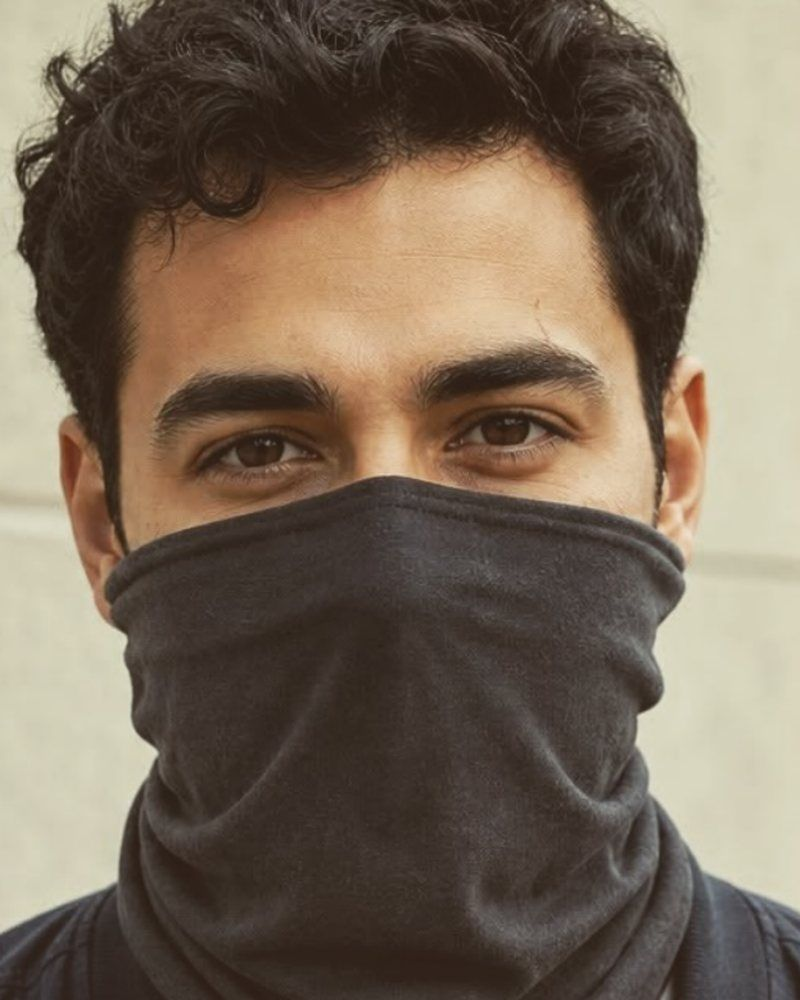
Covered faceMatched face Instagram postFacebook postResults do not establish identity.
Object match in action
Nexus detects the objects in each captured picture and lists them. Pick one to see exactly where it is.
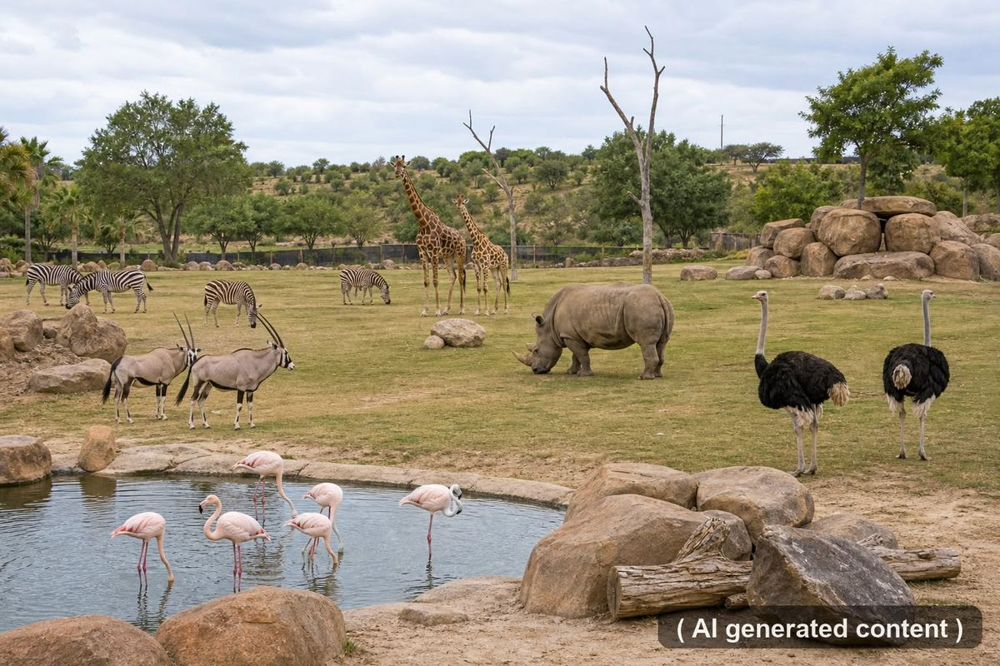
Case target in action
Set a case target, like a green shirt with 11 on it. Every captured picture and video frame is read for it, and a match raises a case target alert.
A number on a shirt, a word on a sign or a hat.
No text targets yet.
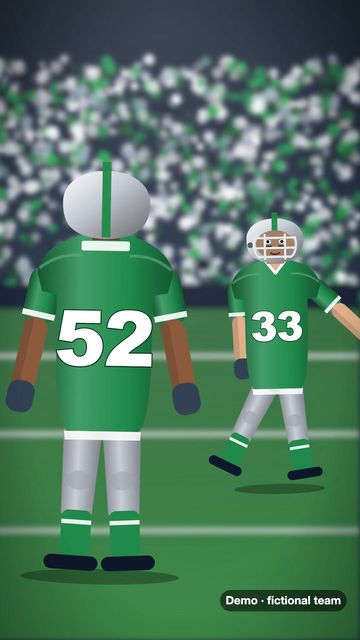
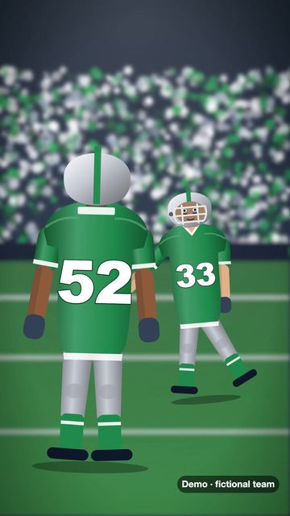
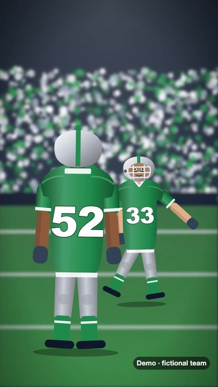
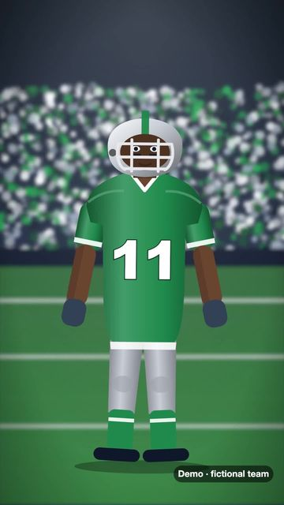
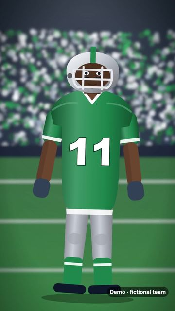
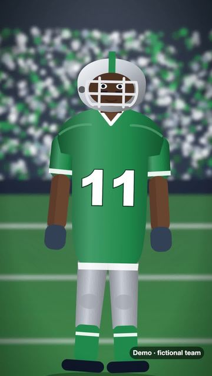
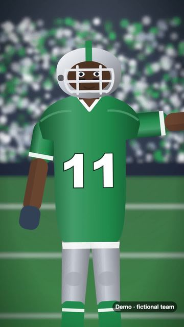
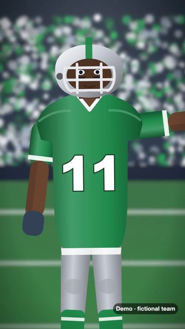
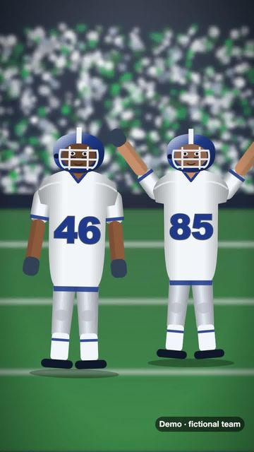
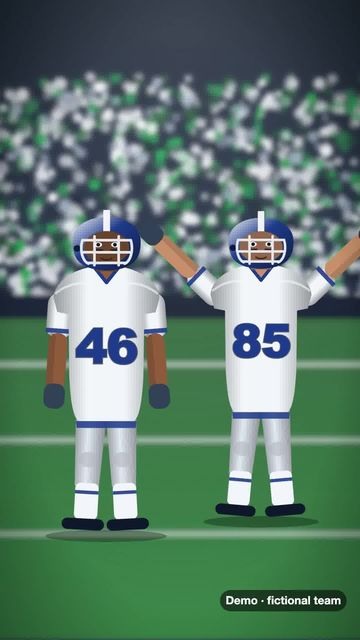
Demo videoVideo frame at 0:08
| Kind | Jersey | object 52% |
|---|---|---|
| Colour | green | 86% of the box |
| Text on object | “11” | scene text 100% |
The object The text read on it
Actions
The workflow follows how investigators actually move through social evidence: preserve the page, mark what matters, index local signals, compare across unlocked cases when allowed, and package the record.
Start from a local case workspace with agency and investigator context.
Save visible public pages, media, comments, and source-linked records.
Keep the strongest evidence visible across platform modules.
OCR, User Index links, friend identifiers, target checks, visual matching, and local cross-case lookup.
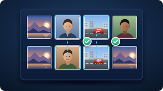
Generate reports, media folders, hashes, and disclosure-ready files.
Methodology
The same method applies on every platform module, so a case reads the same no matter where the evidence came from.
Reports
Nexus builds structured HTML reports from the investigator's preserved material. Every item links back to its source, its local file, and its hash.
Thumbnails, timestamps, source links, and local paths for each captured item.
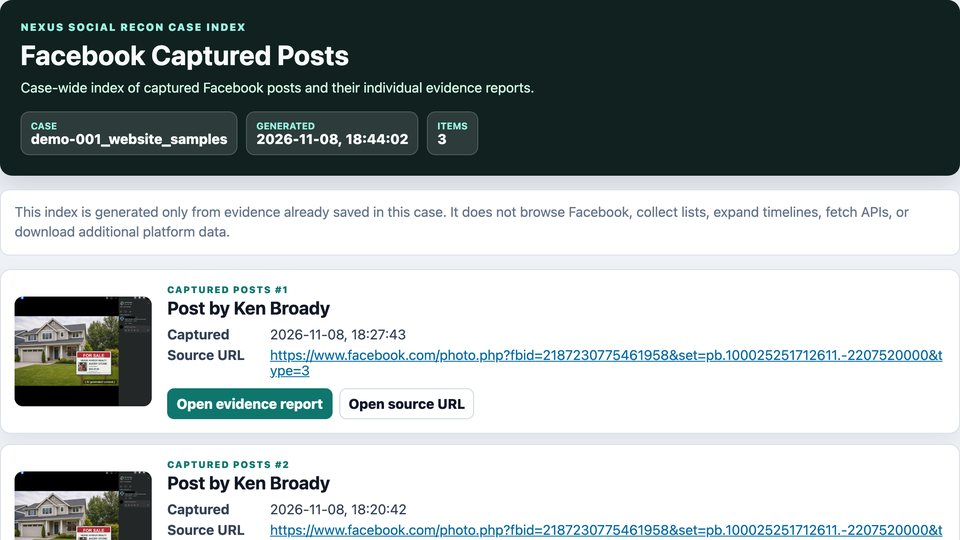
OCR text, comments, captions, and media details beside the capture.
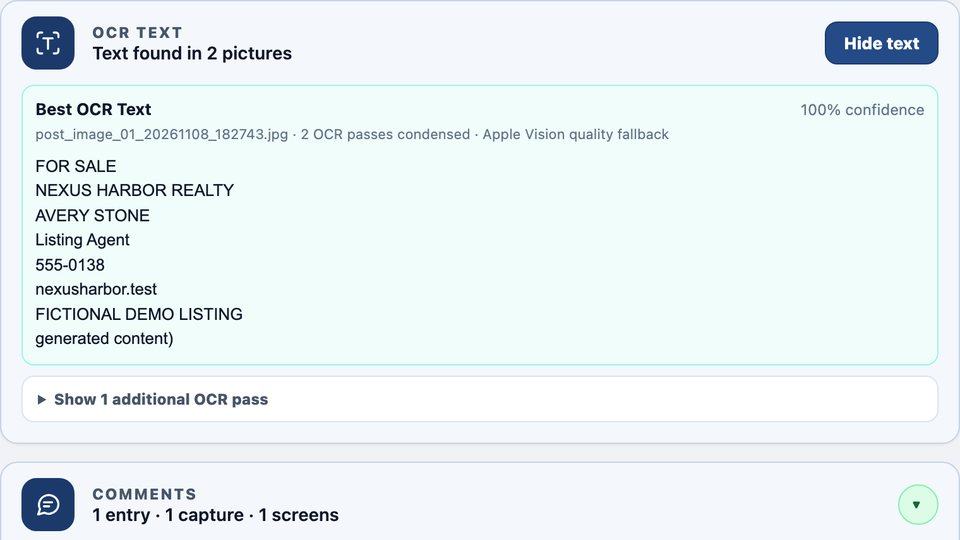
SHA-256 hash for every file, plus an evidence manifest for the package.
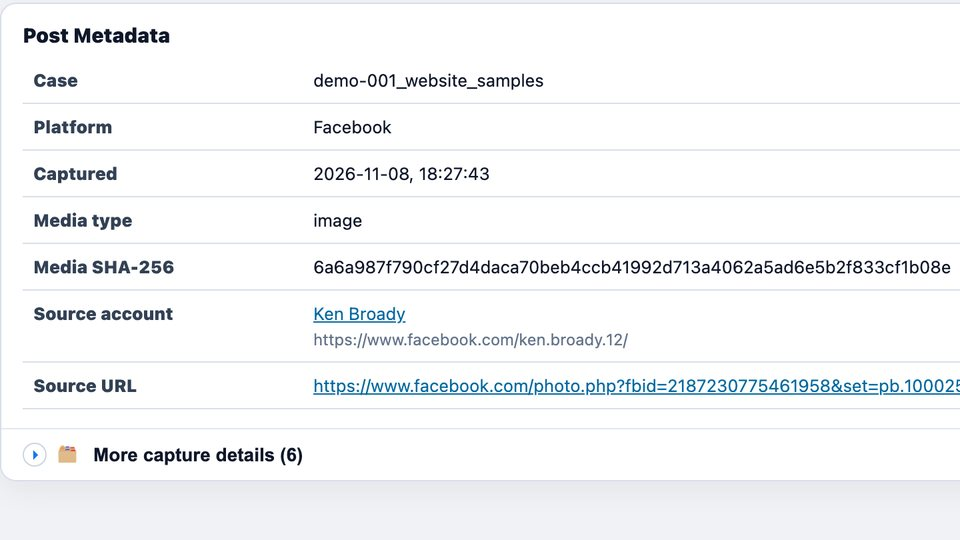
Single-person and activity reports, kept separate so nothing about other people is included.
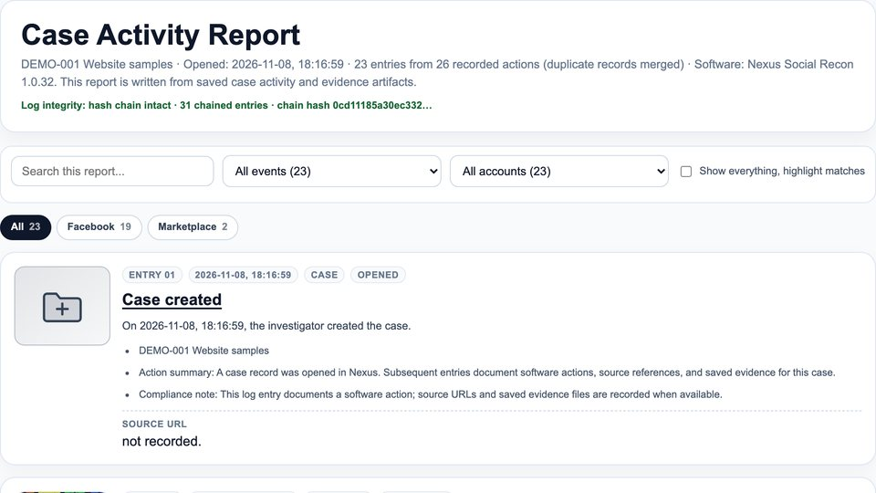
A factual, chronological summary of what the investigator did, beside the technical record.
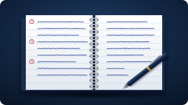
Report packages can be password-protected with AES-256 for disclosure.
Hashing and Integrity
Hashes let a reviewer show that a file in the report is the same file that was captured, without taking anyone's word for it.
Captured screenshots, media, and exported files are hashed with SHA-256. The hash is written into the evidence report and the manifest next to the source URL and local path.
# illustrative manifest layout
file sha256 source_url
capture-001 <64-character hash> https://…
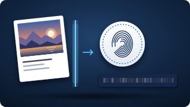
The Nexus Hashing Tool recalculates SHA-256 for any file on the same computer and lists the name, size, and hash, so it can be compared with the report.
Investigator actions are written to an audit log in the case, so the handling of the evidence can be reviewed as well as the evidence itself.
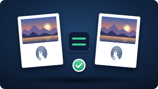
Encryption
Nexus is local-first: case files stay on the investigator's workstation or organization-controlled storage, and cloud processing is not required.
A case can live in its own AES-256 encrypted volume that is mounted only while the case is open and unmounted when it is closed. Available on macOS.
A vault opens with the investigator's passphrase or a one-time recovery key. Touch ID quick unlock is available on supported Macs. Keys are wrapped with scrypt and AES-256-GCM.
The local cross-case index of OCR text, identifiers, and media signatures is encrypted, so cross-case memory does not leave searchable plaintext on disk.
Report packages can be password-protected for disclosure, with the password stored encrypted in the system keychain.
Supported Platforms
Each module captures public content as it appears on screen, through the platform's own pages. On every platform the investigator can also capture a scrolling page or a drawn area of the screen, and every saved file is hashed with SHA-256.
Platform note: Support refers to compatibility with visible, user-directed workflows. It does not imply endorsement or authorization by the named platforms. Investigators remain responsible for following applicable law, agency policy, account permissions, and current platform terms.


2dbaa23879df4872c7e50c2227e5ef610fd7fffea85b563ee8c1a1352045eb4c2dbaa238…2045eb4c

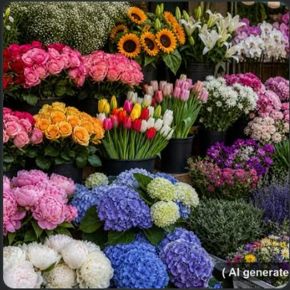
Ssample.account Saturday market colours 🌷
bf21260ce54cc2023025293fb99bc69d41bf0c923fd722a1aac76368f725e4b1bf21260c…f725e4b1

 BOTTOMBBOTTOM
BOTTOMBBOTTOM
ab5909df6cb3dadf55687e07515e107fd80bc34fe17c0a72d49f990da812b359ab5909df…a812b359

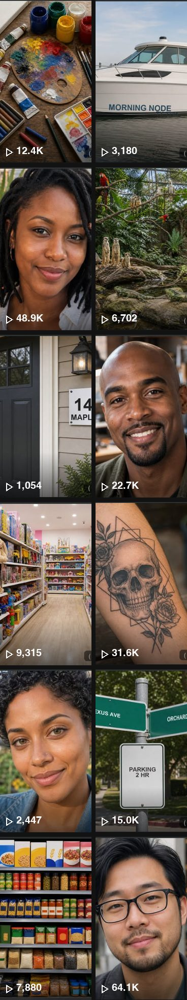
BOTTOMBBOTTOMa779e7e13a0bd380f6443d1853e34cbdd04852c5830ab4f92efc5f2f6c062052a779e7e1…6c062052

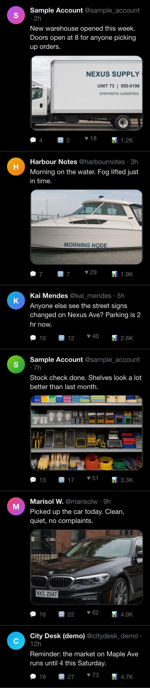
BOTTOMBBOTTOMefd3f72a4e4e5d6fb775dadfd099aeed40a0391fd770cc518acf788f1b1fceffefd3f72a…1b1fceff

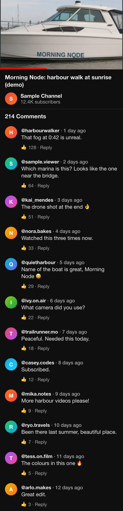
BOTTOMBBOTTOM55aa9c4925c1700ee686e696df53a5534aaab908eb1aae0afac7c51edfdf27d455aa9c49…dfdf27d4

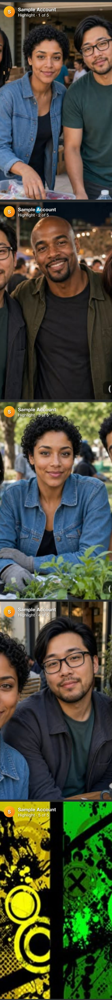
42a25cd83a17df7560bde92567e156ccc343157b51377daed97c8bd99c9490e742a25cd8…9c9490e7

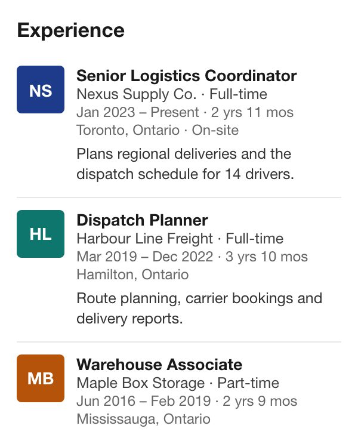
495304f9edc520fba6af9fb6943d56cf4d69442e41bca25ff0bafb73ccbf4c23495304f9…ccbf4c23

 BOTTOMBBOTTOM
BOTTOMBBOTTOM
0d9a1e579f9e6b07080177a950f1754d5b671be89c8f1235b00f010d8a466e490d9a1e57…8a466e49

 OCT 31◂OCT 31
OCT 31◂OCT 31
9121845e19d3c4f13c6c97b86fe8cf8cb0b1866b29514993abcbea7ed5ad9c459121845e…d5ad9c45

731e386e45be023603adf9ea9e585f237bc8d4344e98706fdf43dd6c34b22941731e386e…34b229413f5621bb0527d2168c19b5963b3005d41cf5cd84068fec31fadaed8b56c2df0e3f5621bb…56c2df0e

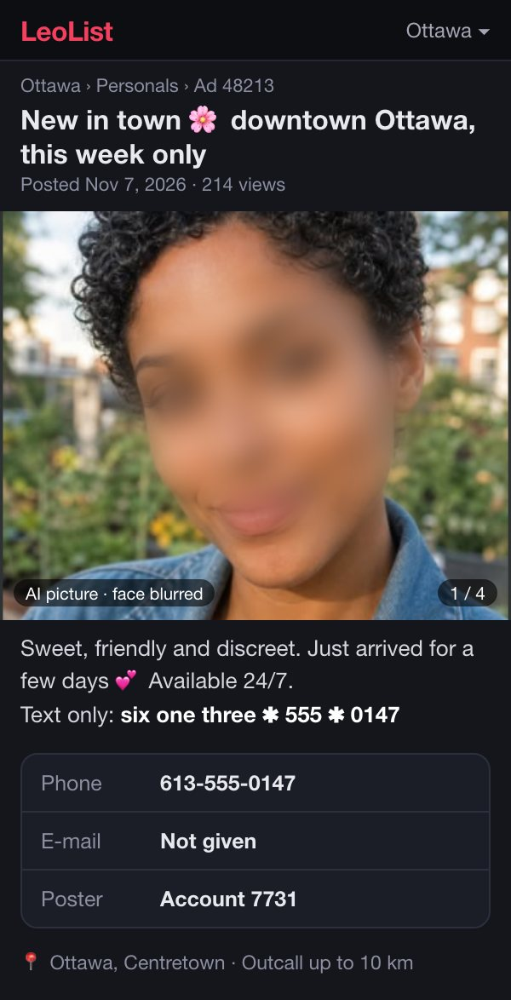
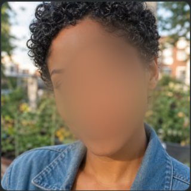
Toronto · Oct 12 · this caseSame number, same picture45bb099b450967dd4f2ed682b4ecf9f2dcd51734697af1fbfbc2059d2f813b9545bb099b…2f813b95

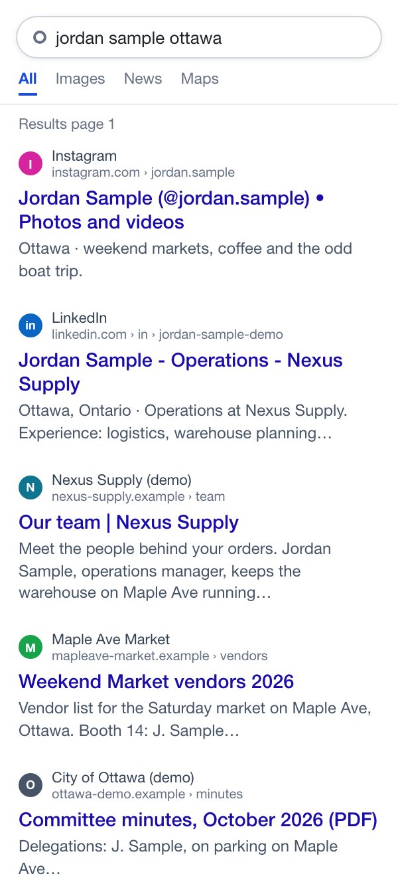
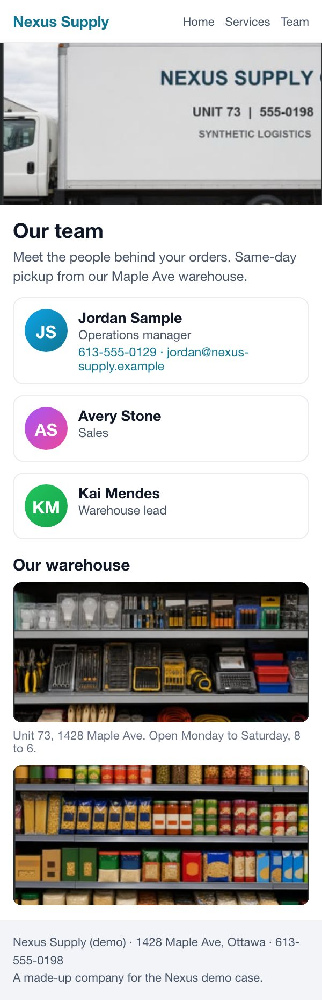
aa84aabc86eab454aa7211ada91d7429dbfd034d03700bb026975ee6a2a2391baa84aabc…a2a2391b
Previous Capture Detection
Nexus Social Recon alerts the investigator when a profile, post, or exact source URL has already been preserved in an available case. It can also place the current capture beside prior case evidence for direct review. This helps prevent duplicate collection, directs investigators to existing evidence, and frees more time for new findings and deeper case analysis.
Licensing Tiers
Every tier ships with the same core case workflow: capture, local index, hashing, audit logging, and structured reports. Platform coverage and analysis capability scale with the tier. All prices are in Canadian dollars.
Reliable capture and reporting across a focused set of platforms.
OCR and broader platform coverage inside active cases.
Full platform coverage and shared case intelligence for teams.
Work as a team on a project and stop collecting evidence that has already been captured.
Nexus Social Recon is built for public-source evidence capture, investigator triage, local indexing, media intelligence, and defensible reporting.
For purchases of more than two licences, please contact sales.